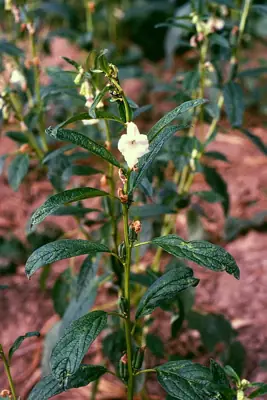

pranet · 出典付きの植物図鑑
ゴマ
Sesamum indicum L. · Pedaliaceae

ゴマ は、ゴマ科ゴマ属の一年草。アフリカ大陸に野生種のゴマ科植物が多く自生しているが、考古学の発掘調査から、紀元前3500年頃のインドが栽培ゴマの発祥地であるとされている。主に種子が食材や食用油などの油製品の材料とされ、古代から今日まで世界中で利用される植物である。
出典: Wikipedia 日本語版「ゴマ」 · CC BY-SA 4.0
異名: Anthadenia sesamoides Lem., Sesamum africanum Tod., Sesamum auriculatum C.Presl, Sesamum brasiliense Vell., Sesamum edule Steud., Sesamum foetidum Afzel. ex Engl., Sesamum hopkinsii Suess., Sesamum luteum Retz, Sesamum malabaricum Burm., Sesamum mulayanum N.C.Nair, Sesamum occidentale Heer & Regel, Sesamum oleiferum Moench, Sesamum orientale L., Sesamum somalense Chiov., Sesamum tavakarii M.R.Almeida & S.M.Almeida, Sesamum trifoliatum Mill., Strobilanthes gentiliana H.Lév., Volkameria orientalis (L.) Kuntze, Volkameria sesamodes (Lem.) Kuntze
同定や利用は自己責任でお願いします。この図鑑だけを根拠に野生の植物を食べないでください。
出典
- 学名: World Flora Online Plant List 2026-06 · CC0 1.0
- 名前: Wikipedia の記事名と Wikidata · CC0 1.0（Wikidata）。記事名は事実
- 説明: Wikipedia 日本語版「ゴマ」 · CC BY-SA 4.0
- 分布: World Checklist of Vascular Plants (WCVP), RBG Kew, version 2026-06-04 · CC BY 3.0
このページは pranet のデータから自動生成しています。コードは MIT、データは項目ごとのライセンス（説明）。